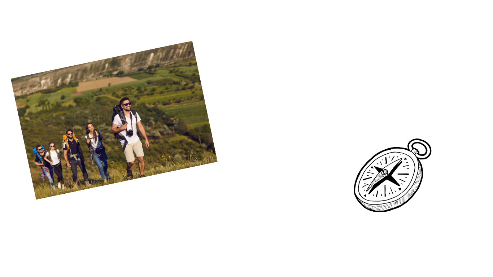
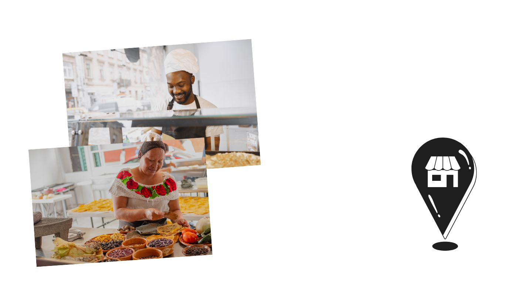

SamaTour é um guia virtual que oferece tours virtuais históricos, culturais, ecologicos e gastronômicos por São Mateus. Ele também permite se conectar com guias locais, comercios e estabelecimentos além de guiar você pela cidade, te conectando aos melhores destinos que a cidade tem a oferecer.
O usuário do aplicativo pode encontrar pessoas que oferecem o serviço de guia, dispostas a serem suas anfitriãs e com roteiros personalizados para sua melhor experiência, caso você seja um morador da cidade e deseje se candidatar a guia, basta ir na opção quero ser um guia, nas configurações de perfil do aplicativo e se cadastrar
Apenas ser alguém disposto a prestar esse serviço e que esteja minimamente apto para o mesmo que seja maior de idade e que demonstre conhecimento sobre a cidade, a propria plataforma te dará dicas e treinamento para isso, também poderá adotar nossos roteiros personalizados ou criar os seus.
Os guias serão avaliados pelos usuarios, podendo ser mais indicados na plataforma pela sua classificação, os guias são classificados em guias profissionais e comunitários sendo de escolha do usuário a opção mais viável para ele, quanto mais conhecimento da área tiver maiores a chances de ser contatado como guia.
Com o guia virtual do Samatour, você tem acesso a vários tours diferentes e a cada local que você visitar verá informações sobre o local. Descubra a história por trás de cada ponto turístico e veja a cidade com outros olhos.
A função explorar te ajuda a encontrar hoteis, resturantes, farmacias, padarias, e outros estabelecimentos que procure, te dando a localização exata daquilo que você procura e as informações que você precisa, se você é um comerciante e deseja ser encontrado mais facilmente por possiveis clientes, cadastre o seu negocio no samatour é gratuito e você pode ter acesso a pacotes de ferramentas que te ajudarão a ser encontrado mais facilmente.
O Samatour deseja fazer de São Mateus uma cidade melhor, para isso precisamos da sua colaboração, para casos de irregularidades na cidade, poluição de áreas de preservação e praias ou áreas perigosas denuncie no aplicativo na função denuncias sua colaboração nos ajudará a alertar os usuarios da plataforma e a mobilzar os orgãos e pessoas responsáveis pela manutenção desses locais.
A Conexão Local é um espaço dentro do SamaTour onde turistas e moradores podem trocar informações. Precisa de dicas sobre transporte, segurança ou os melhores passeios? Aqui, você pode fazer perguntas e receber respostas da própria comunidade, tornando sua experiência na cidade mais fácil e interativa.
O samatour discovery é uma plataforma de vídeo dentro do samatour, onde você pode encontrar videos sobre locais da cidade, curiosidades históricas e culturais, além de produtos e serviços da região.
{kind=link}